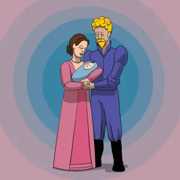
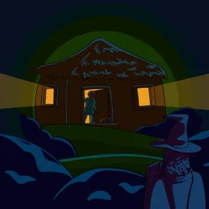
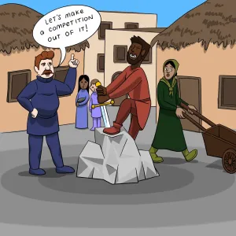
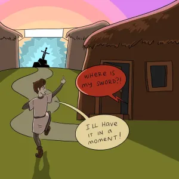
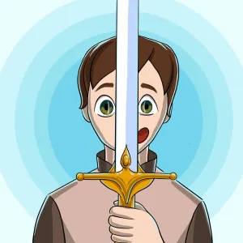
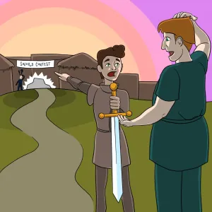

Long ago in England, a wise and just king ruled the land. His name was King Uther. Times were good and the people lived well. King Uther wanted a magician at court. And so he chose the famous Merlin the Magician. Merlin could see into the future. And he knew those good days were not going to last.
King Uther and the Queen Guinevere had a child, a baby son. At a castle party for the royal birth, Merlin the Magician took the King aside. He said, “Sire, there is something you must know. Soon a great darkness will fall over this land. Your child is in great danger. Let me take the baby far away. I will be sure he stays safe.”
“Merlin!” said the King in surprise. “You are a great magician. And you are my friend. But there is no way we would let anyone take our child away!”

part 2
Sadly, soon after the child’s birth the Queen died. Not long after, King Uther was killed in battle. That very night, Merlin swept into the castle and took the child
The next morning, the royal nurse went into the nursery. Alas, an empty crib! In fear, the nurse, the nobles and servants looked everywhere. But the baby was gone!
For years, there was no king to sit on the throne. No king to set the laws. Men of high rank fought each other to be king. Darkness fell over the land. Robbers and bands of wild men ruled the streets of London. Evil men broke into houses and took what they wanted. Travelers on the roads were jumped and robbed. The people of England lived in fear.
Yet far away, there was a quiet place. A good knight, Sir Ector, lived in peace with his two sons. His first son was named Kay. His younger son Arthur had been adopted as a baby. Years before, a stranger had come to Sir Ector with a baby. He asked if Sir Ector would raise the child. The old knight took the baby in his arms, glad for a second child. He named the baby Arthur, and raised the child as his own.
When Arthur was ten years old, the same stranger returned to Sir Ector’s home. He could read and write, and so Sir Ector hired him to teach his two sons. Kay could not sit still for lessons and he stopped coming. But Arthur listened with wide eyes. He learned everything. I bet you have guessed by now who that stranger was – none other than Merlin the Magician!
At the end of each day when Arthur finished his chores, that was time for the lessons. Merlin would sit with Arthur for hours and teach him about the world. Arthur was a thin lad, not strong like his big brother Kay. Merlin said not to worry about that. He said what mattered most was to have a heart that was big and strong. Merlin saw how the birds, foxes and deer followed Arthur. He could see that the boy had a very big and strong heart.
part 3
By the time Arthur was 16, his brother Kay had become a knight. He was now called Sir Kay. Arthur loved nothing more than to serve his brother as a squire. He kept great care of his brother’s tunic and helmet, his spears and lances.
One day at lesson time, Merlin looked away. He stood up.
What is it?” said Arthur.
“The people need hope,” said Merlin. “Arthur, there is something I must do. I must go now.”
That night, when the nighttime was at its most dark, Merlin the Magician came to London’s market square. He stood in the middle of the square. He held both his arms high. And pointed his wand to the stars.
The next morning at dawn, people started to arrive at the market. There in front of them was something most odd. A block of white marble stood in the middle of the town square. Resting on the block was a giant stone the size of a very large rock. At the very top of the stone there was a golden sword handle and a few inches of the blade, shining in the sun. Yet – this was most odd – the rest of the blade was buried deep into the stone. None of this was there the day before!
What’s more, these words could be seen on the top of the blade:
“Whoever pulls out this sword from this stone is the true king of England!”
As soon as the crowd knew about the message, men jumped up to that white marble block. One after another, they gave the sword a yank. Each tried and tried, but the sword stuck fast. It would not move.
One said in gloom, “There is no man alive who could pull out that sword!”
“We’ll see about that!” said a voice in the crowd. The Duke of Cornwall, dressed in silks and ribbons, stepped up to the white marble block. “Hear ye, hear ye!” he said. “I call for a tournament to be held, one month from today. Knights from anywhere and everywhere in England are invited to come. There will be contests and prizes. And a grand feast for all!” The Duke said to his wife, the Duchess, “If I know men, this tournament will draw the strongest, finest knights in all of England!”

part 4
Said the Duchess, “Good idea, my dear. All we need is one knight who is so strong he can pull that sword from the stone. Then we will have a king again, at last!”
The people danced and cheered. At last there was something to feel happy about! News of the tournament traveled fast. From castle to village, to every far corner of the land. At last, word got to the far-away home of Sir Ector. Sir Kay heard the news when he was polishing his helmet.
“Arthur!” he called out. Arthur was once again by the woods, feeding birds from his hand. He set down a pile of seeds for the birds, and a pile for the squirrels. Then he ran fast to see his brother.
Ezoic
“There you are!” said Kay. “There will be a tournament in London. We must set out at once!”
What great news! Arthur had never been more than a few miles from home. He would be the best squire ever for his brother! Arthur ran back to the house. In the courtyard his father was getting the horses ready.
Sir Ector and his two sons rode through London on their way to the tournament. Riding through the market square, something shiny glinted in the sun. “That sword looks like it goes right into that stone,” said Arthur. “But how can that be? That’s impossible.” But why were guards standing all around it?
The father and his two sons reached the tournament. Sir Kay ran off to get in line to register. Sir Ector greeted many old friends – dukes, earls, barons, counts and countesses. Arthur sat in their tent, polishing his brother’s helmet till it shone bright.
A bugle sounded. The tournament was about to begin! “Get my sword, demanded Kay”
“Right away,” said Arthur. But where was it? Arthur looked around in panic. Kay’s spear, battle-axe, and dagger were right where they should be. But no sword. “Kay…” he said, “how about a battle-axe?”
“Where is my sword?!”
“I'll have it in a moment!” said Arthur.
part 5
“Be quick about it!” said Kay.
Arthur ran back into the tent. Maybe he had left Kay’s sword there? He searched through the bag of armor and weapons. How could he let such a thing happen? Then he had an idea.
Very fast, Arthur rode back to the market square. The guards were not there anymore – they must have all gone to the tournament.
Arthur stepped up on the marble block. “Let’s see if that sword can get unstuck.” He took hold of the handle of the sword. He moved the sword a bit. “Hey!” he said. “It’s looser than I thought.”
With one big tug, the sword slid out.
part 6
Arthur was thrown back, but the sword was safe in his hands. “I will be sure to bring it right back.” He raced to the where his brother was waiting.
“Here it is,” he said, handing the sword to his brother.
Kay took one look. “Oh!” he said in surprise.
“What is it?” said Arthur. But his brother was gone. Soon after, he heard his brother’s voice outside the tent. “Father, I have something to show you.” Kay and his father stepped inside the tent.
“Look!” said Kay. He pointed to the sword.
Sir Ector stared. His face turned white. “Kay,” said the father, facing his older son, “where did you get this sword?”
“It is mine!” said Kay, holding it close to him. “I have it now.”
“Kay!” said the Father again in a stern voice. “I will ask you one more time. Where did you get this sword?”
The young knight’s head dropped down.
“From Arthur,” he said. “He lost my sword! Somehow he got this one.”
“Arthur?” The father turned to his younger son. “How is it that you came by this sword?”
“I’m sorry!” said Arthur. “Father, I will put it back right away. I only meant to borrow it when I pulled it from the stone.”

part 7
“You must take us to where you found this sword. At once!” The three of them rushed over to the market square.
Arthur climbed up onto the marble block. “It came from here,” he said. He lifted the sword over his head.
Then he dropped the blade back into the stone. “Now it’s back.”
“Hey,” said Sir Kay. “I still need a sword!” He jumped up onto the marble block. Grabbing the hilt of the sword, he pulled and pulled. But it did not move.
Kay shouted to Arthur, “What did you do to it?”
“Nothing!” said the lad.
“You must have done something!” yelled Sir Kay.
“Hush! Both of you!” said the father. “It is better if no one sees or hears us.”
But it was too late. A crowd had already started to form.
“Hey! Did you pull that sword out of the stone?” called one.

part 8
“Yes,” said Arthur. “I did.”
“Do it again!” called another from the crowd.
“Yes, let’s see it!”
Arthur put his hands around the golden handle. With one tug, the blade slid out.
“Who are you?” called another voice. “What’s your name?”
“Arthur,” said the lad.

part 9
“Wait a minute, put that sword back!” A tall knight pushed forward from the crowd. “Anyone can pull it out, once it’s been pulled!”
“Go ahead. Put it back, son,” said a voice. It was the Duke of Cornwall, the one who had called for the tournament.
“All right,” said Arthur. He slipped the blade back into the stone, with ease.
“Let me at that now!” said the tall knight. He jumped up and grabbed the handle of the sword. But pull and tug as he might, the sword would not move. Not even a bit.
Another knight tried. Then another. But no one could move the sword. Some waited, thinking the longer they pulled the sword, the looser it would get. But when each man took their turn, the sword did not move for them.
“Let the lad try now,” said the Duke of Cornwall. “Arthur, go ahead.”

part 10
Arthur stepped up to the stone again. In one motion he freed the sword. This time, he held it high above his head. The blade flashed in the sun. Amazed, the crowd did not know what to think.
One called out at last. “He must be our new king!”
“We have a king!” called another. “At last!”
“Stop!” shouted the tall knight. “Do you really think this skinny boy should rule over all of us?”
“Yes!” said a voice. All eyes turned around. It was Merlin the Magician.
“I know this boy. I know his heart. There is no one in England who has a heart that is bigger and stronger than his. The sword has told us this young man is to be the next king of England. And there is something else!”
“The lad,” said Merlin, pointing to Arthur, “is the true child of King Uther. He is the missing baby!”
Cheers began to ring out. “Hail, King Arthur!” called someone from the crowd.
Sir Ector fell to his knees. Then Sir Kay. One person after another fell to their knees, too. All cheered. At last, a king had been chosen. A fresh young king, and a new day for England!